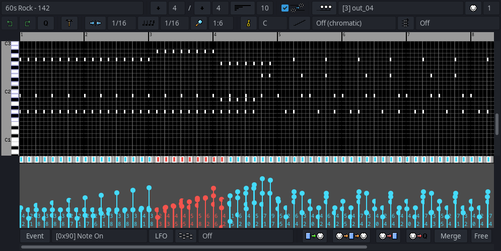
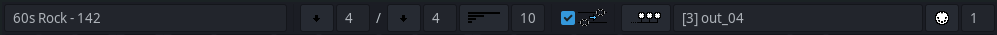
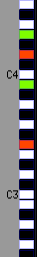
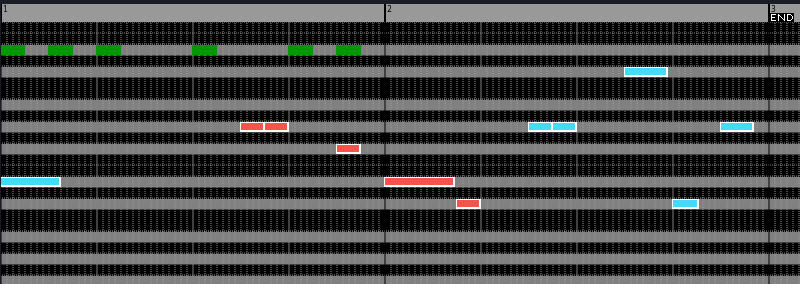
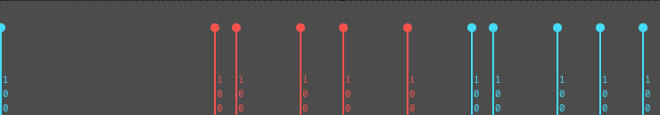
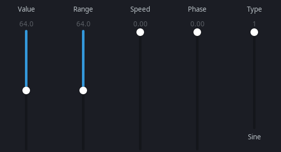

[5] Sequence Editor Window
Contents

Right mouse clicking on a sequence box from the
[3] Main Window
shows a menu. Select New/Edit Sequence to open the sequence editor.
Hover over buttons briefly in the sequence editor to see tooltips.
Top bar

First item changes the sequence name.
Down-arrow buttons set time signature.
Length
sets sequence loop length.
Transpose
controls whether the
[6] Song Editor Window
transpose applies to this sequence.
Bus
selects ALSA/JACK port device and MIDI channel.
Second Bar
Undo
rolls back sequence changes for this session.
Redo
re-applies edits up from the previous Undo.
Q
button will quantize selected notes based on current grid snap.
Tools menu (hammer icon)
Select
: select notes by criteria.
Modify time
: adjust selected notes’ timing.
Modify pitch
: transpose selected notes.
Randomize Event Values
: randomize velocity/CC values (range +/-1 to +/-16).
Grid Snap
sets precision for note creation and movement.
Zoom
sets horizontal zoom.
Key
shows selected note key on the left piano roll.
Scale
can gray out notes that do not fit the selected scale and key.
Chord selection
allows drawing notes as chords (LMMS table).
Piano roll (left side)

Right mouse click: mute key (changes to red).
Middle mouse click: solo key (changes to green).
Mute/solo key settings are not saved to file.
Right mouse click +
Ctrl
toggles letter vs MIDI number display on piano roll.
Sequence Grid

Drawing notes: hold right mouse button to enter draw mode (pencil), then while still holding right, left mouse click to insert notes.
Left mouse click selects note, drag to box-select multiple notes (selected notes turn red).
Left mouse drag selected notes to move them.
Middle mouse drag over a note changes the length and can adjust multiple selected notes at once.
Backspace/Delete removes selected notes.
Left/Right keyboard arrows move selected notes by grid snap.
Shift
+ Left/Right keyboard arrows moves selected notes by very small amounts.
Up/Down keyboard arrows moves notes by semitone.
Shift
+ Up/Down keyboard arrows moves by octave.
With chord selection enabled, drawing creates multiple notes by chord and type.
Ctrl+C
: copy selected notes to clipboard.
Ctrl+V
: paste clipboard notes.
Ctrl+X
: cut selected notes and copy to clipboard.
Notes play when added or moved.
Mouse wheel: scroll vertically.
Shift
+ wheel: scroll horizontally.
Ctrl
+ wheel: zoom horizontally.
Alt
+ wheel: zoom vertically.
z
key: horizontal zoom-out.
Shift+z
: horizontal zoom-in.
0
: reset horizontal zoom.
v
key: vertical zoom-out.
Shift+v
: vertical zoom-in.
9
: reset vertical zoom.
Default vertical zoom can be set in
[7] User Configuration File (.seq32rc)
.
Event Editor
Event
button selects which event type is displayed/edited.
The event strip adds/selects/moves MIDI events (non note on/off), similar to the piano grid.
Data Editor

The data editor under the strip changes velocities, channel pressure, CC values, patch select, etc.
Left mouse click + drag draws a line, values follow the line.
If no events are selected(red), all events match the draw line.
If events are selected(red), only selected events change.
LFO Editor

LFO
button opens an LFO editor window.
Hover sliders for tooltips.
If no events are selected, all events are adjusted; otherwise only selected events change.
Additional controls (bottom)
Event
button selects which event type is displayed/edited. The current selected event type is displayed to the right of the button.
You can change the default MIDI controller labels with the
[8] User File (.seq32usr)
.
LFO
button opens the LFO editor window.
Background Sequence
will draw another sequence of notes on the sequence grid in the background(dark green) as a reference.
The current background sequence name will display to the right of the Background Sequence button.
Sequence dump
during live play will mute/unmute the sequence.
Pass thru
will send MIDI in to MIDI out.
Recording
will add incoming MIDI messages (notes, CC events, etc) to the sequence.
Quantize
will grid-snap incoming MIDI recording.
Merge Button
Legacy merged looped
: notes added upon looping.
Overwrite looped record
: clear notes on each loop after first note and overwrite previous pass.
Expand sequence length to fit recording
: sequence does not loop and expands after reaching last 1/4 measure.
Expand and replace
: expand and replace previous events on the sequence.
MIDI record supports simultaneous multi-sequence record, channel specific, up to 16 channels at once.
The Merge Button label will change according to the currently selected recording method.
Free Button
allows you to set the velocity of notes when recording.
Free
: notes velocities are recorded without adjustment.
Fixed
: notes velocities are adjusted as they are recorded to the given fixed amount.
The Free Button label will change according to the currently selected recording method.
MIDI step edit
Step edit is available when recording and seq32 is not playing, starting at the transport line.
Ctrl
+ Right arrow key will move the transport line by snap to the right.
Ctrl
+ Left arrow key will move transport line by snap to the left.
Home
key moves transport line to start.
The
Free
recording method will set all note velocities to 100 for step edit. The other velocity settings work the same as recording when rolling.
Prev:
[4] Options Window
Contents
|
Top
Next:
[6] Song Editor Window